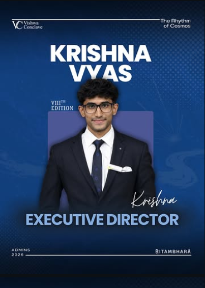
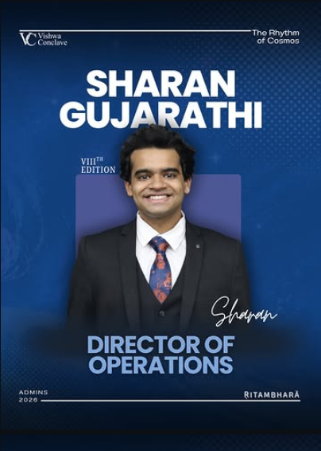

✦
VishwaForum
A smaller, focused gathering with two guest speakers and minimal entry fees — the opening event of every tenure.
Vishwakarma Institute of Technology · Pune
Thought Begins Here
India's first truly multidisciplinary, student-centric conclave — organized by the students of VIT, Pune.
Who we are
VishwaConclave is a student-driven platform where thought leaders from technology, defence, space, arts, cinema, history and public life share a stage with the next generation. Conceived, designed and run entirely by the students of Vishwakarma Institute of Technology, Pune, it fosters dialogue, innovation and leadership among young minds across every discipline.
A smaller, focused gathering with two guest speakers and minimal entry fees — the opening event of every tenure.
The large-scale annual gathering: multiple speakers from varied fields, set in immersive designs and installations.
Creative installations and a distinct visual identity every year, shaped by the students' own design team.
The 8th Edition · 2025–26
Ṛitambhara — The Rhythm of the Cosmos
March 21–22, 2026 · VIT, Pune
Journey
Unity through diversity.
Life's reflective moments, and the change they set in motion.
The VIIIth edition, held March 21–22, 2026, with Forum '25 opening the tenure.
On our stage
Admins 2026 · VIIIth Edition


Get in touch
For speaker invites, sponsorships, collaborations and media — message us on Instagram or LinkedIn.